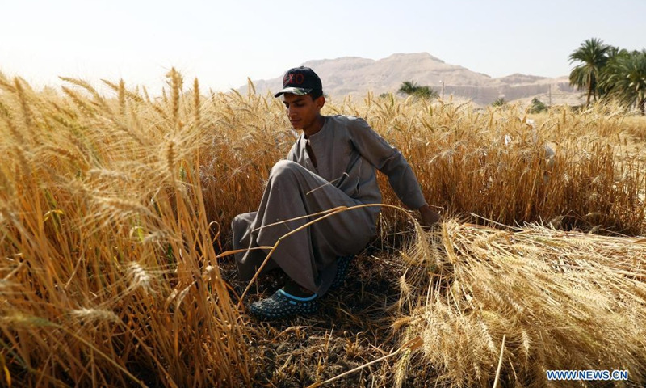
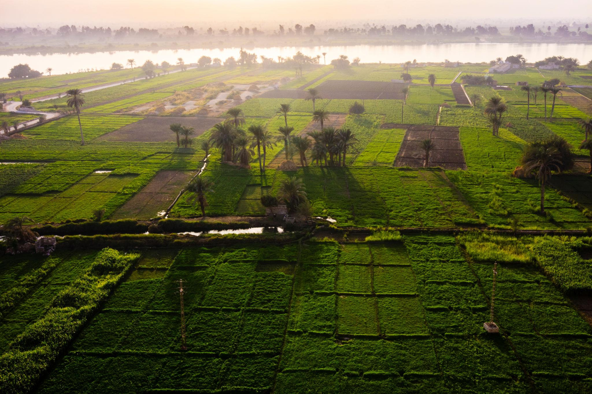

Shunah is an Agritech Company focusing on Dry Crops. Utilizing Satellite Technology, Computer Aided Vision, Dynamic Market Intelligence Engine, and Social Infrastructure IoT, Shunah Optimizes the Dry Crops Supply Chain for Small Scale Farmers.
Understand Our Technology →
